Forward Deployed Engineer / Credit Analyst · BNP Paribas CIB, AI Lab (Lisbon)
2026–Present
Cover French corporate credit portfolios worth €4B; map workflows to high-impact AI/automation use cases.
AI - Sofware Engineer
Loves to build things that solve real problems.
Frame the use case with the business, design the technical solution and build it to production (RAGs, finetuning, agents...).
Azure Databricks, GCP, Docker, FastAPI, Terraform, MLflow — standardizing how models get built, deployed and monitored across teams and countries.
Forward-deployed alongside front-office teams: mapping the real workflow, scoping the high-impact use cases, and shipping what people actually adopt.
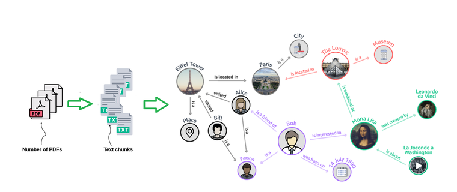
LLM / RAG
Benchmarks knowledge-graph RAG against standard retrieval on financial documents — quality and production cost, side by side.
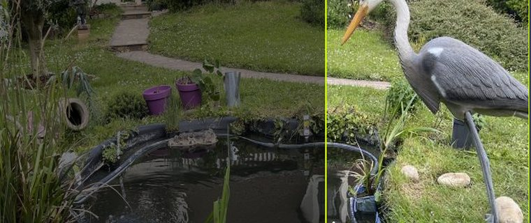
Computer Vision
Fine-tuned YOLOv10 model detecting herons in real time, driving an automatic turret to scare them off.
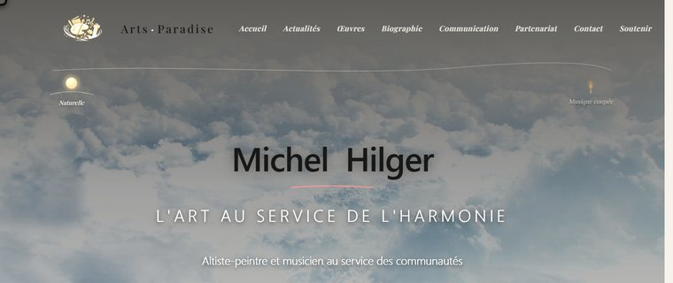
Full-Stack / Freelance
A choir director publishes his own concerts, artworks and biography — Next.js with an embedded Sanity Studio, live on Vercel.
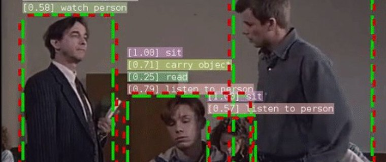
Deep Learning
SlowFast R50 fine-tuned on hand-annotated meeting footage to classify 14 atomic actions — top-1 accuracy 0.47 → 0.65.
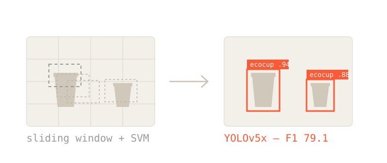
Computer Vision
Detects reusable cups in photos — from classical sliding-window classifiers to a fine-tuned YOLOv5x network.
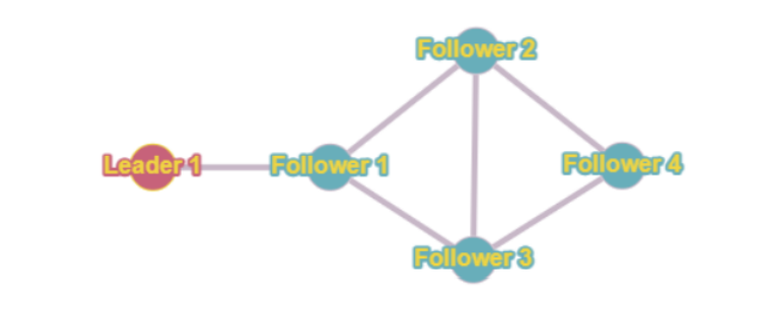
Robotics
Leader–follower diamond formation for 5 unicycle robots under noisy sensors and imperfect comms.
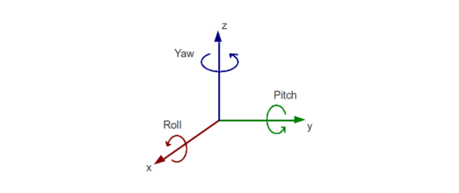
Sensor Fusion
Real-time rocket orientation and altitude estimation via a Kalman filter over IMU data.
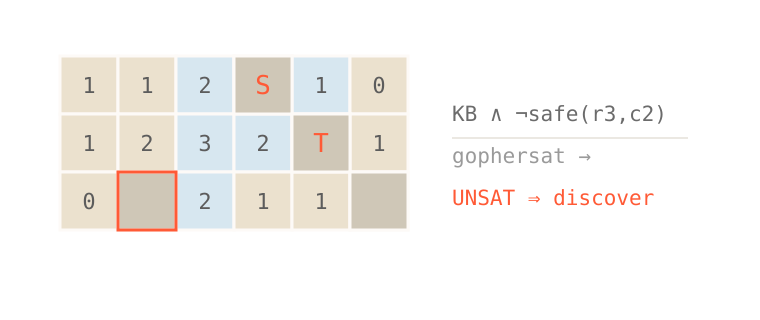
Agents
An autonomous agent that plays Crocomine, a Minesweeper variant, proving each move safe with a SAT solver.
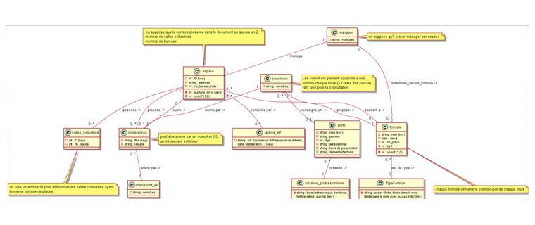
Databases
Two schemas taken from raw requirements through UML and 3NF normalization to working SQL — a veterinary clinic and a coworking space.
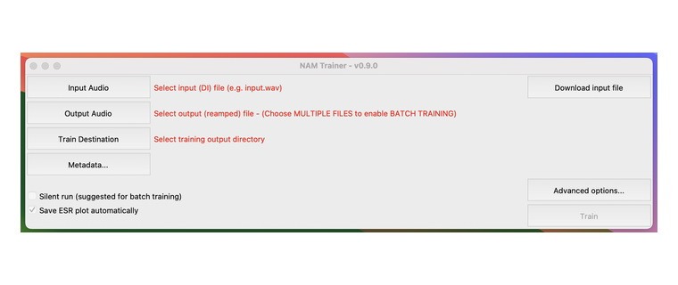
Fork · Audio ML
My fork of sdatkinson/neural-amp-modeler — the neural guitar-amp emulator I use as a reference for audio ML. Upstream's code, not mine.
2026–Present
Cover French corporate credit portfolios worth €4B; map workflows to high-impact AI/automation use cases.
2025–26
Deployed agentic pipelines for deal research and M&A screening, saving 12 hrs/week per banker across CIB Europe & America.
2025
Built a multimodal RAG benchmark across 15 models; won the internal AI Hackathon with an agentic email-drafting system.
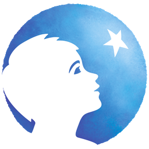
2024
Standardized MLOps on Azure Databricks across 3 countries; cut inference time 50% via FastAPI + Docker.
2023
Built a 2D facial verification model for VIP access at the Paris 2024 Olympics; researched multimodal spoof detection.
2021–22
Migrated a Big Data application to GCP processing 1M+ rows a day; built multi-environment infrastructure with Terraform and CI/CD.
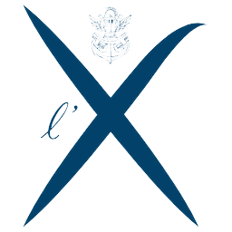
2023–25
MSc Data Science & AI for Business — joint degree with HEC Paris.
2023–25
MSc Data Science & AI for Business — 2nd best Master's in Business Analytics worldwide (QS 2026).
2018–23
Engineering diploma in Computer Science, AI specialization — 3.79 / 4 GPA.